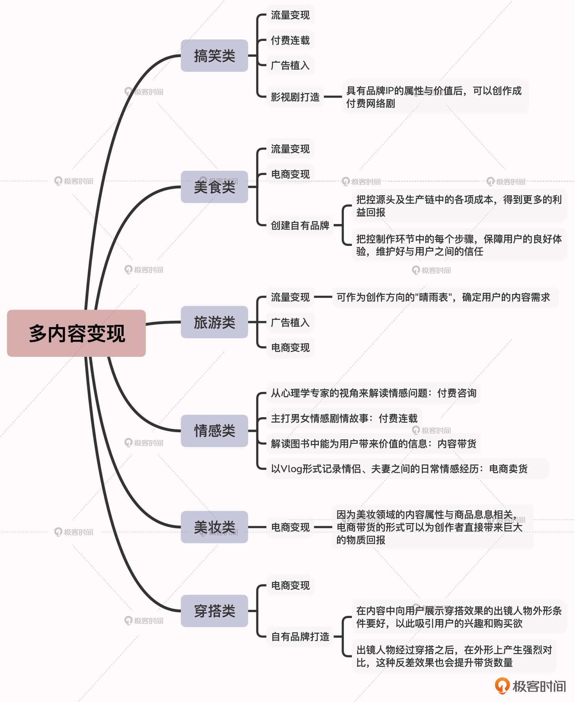

- 00 开篇词 短视频时代下，怎么把握好变现风口？.md.html
- 01 爆款短视频的底层逻辑：用心拍的短视频为啥没人看？.md.html
- 02 爆款短视频的底层逻辑：如何轻松打造自我特色？.md.html
- 03 精益创业法：如何快速跨过从0到1这道坎？.md.html
- 04 SWOT法：这么明显的个人优势你为啥就是看不到？.md.html
- 05 效用函数法：如何用量化的方式进行高效创作？.md.html
- 06 二次创新实验法：如何打造个人的差异化定位？.md.html
- 07 平台定位：如何选择最适合自己的创作平台？.md.html
- 08 如何快速找到各大短视频平台的正确切入点？.md.html
- 09 选题（上）：如何利用思考清单找到合适选题？.md.html
- 10 选题（下）：如何为不同的内容定制合适选题？.md.html
- 11 优劣分析法：如何快速筛选适合创作的视频素材？.md.html
- 12 标题（上）：如何利用微创新巧妙找到爆款标题？.md.html
- 13 标题（下）：如何用对号入座的方式抓住标题亮点？.md.html
- 14 视频封面（上）：如何快速抓住用户注意力？.md.html
- 15 视频封面（下）：如何传递最有价值的信息？.md.html
- 16 视频剪辑：如何轻松掌握视频化剪辑的三大公式？.md.html
- 17 效果反馈法：剪辑很容易，为什么你却一直学不会？.md.html
- 18 剪辑对比（上）：如何避开常见的短视频剪辑陷阱？.md.html
- 19 剪辑对比（下）：如何利用剪辑技巧提升视频质量？.md.html
- 20 拉片法：用电影创作的方式学习爆款短视频运营技巧.md.html
- 21 用户留存率：为什么粉丝很多但忠实拥趸却很少？.md.html
- 22 点赞率（上）：如何有效提升短视频的点赞量？.md.html
- 23 点赞率（下）：三种方法轻松提升用户对内容的认可度.md.html
- 24 上瘾机制：为什么视频观看量很高却没人留言？.md.html
- 25 避坑指南：为什么很多短视频账号中途做不下去了？.md.html
- 26 如何找到适合自己的短视频变现模式？.md.html
- 27 多元化变现：如何明确不同创作阶段的变现任务？.md.html
- 28 多内容变现：不同内容的主打变现模式是什么？.md.html
- 结束语 一切成大事者，都是终身学习者.md.html
- 捐赠
28 多内容变现：不同内容的主打变现模式是什么？
你好，我是周维。
在上节课，我们根据内容创作的不同阶段，重点学习了需要遵循的三个变现原则。其中我提到，找到垂直的用户群体、输出垂直化的创作内容，能够帮助创作者提升个人IP的价值，从而实现收益的最大化。
所以这节课，我会从细分的垂直内容领域入手，给你讲解不同内容类型的主打变现模式都是什么，帮助你在探索变现模式的道路上少踩坑、少走弯路，从而能够依据不同内容的特性实现个人收益的最大化。
在开始之前，我先说明一下，这节课我选取的细分内容领域主要有六个，分别是搞笑类、美食类、旅游类、情感类、美妆类、穿搭类，因为这六种内容类型的特性比较典型，而且也是各个平台上用户都比较喜欢的内容类型，比较适合进行精细化创作，所以探讨其中的变现模式，能帮助我们更清晰、明确地找到适合的变现方向。
好，下面我们就来了解下这几种内容领域的主打变现模式吧。
搞笑类
首先我们来看下搞笑类内容的主打变现模式。
搞笑类的短视频创作，一般都是以幽默、诙谐、搞笑的剧情作为主打内容，展现大众生活中的职场趣事、人际关系、生活轶事、情感交往等方方面面，在内容表达上会结合夸张、反转等多种创作手法，目的就是带给用户更多的欢乐。
这种内容类型，可以说是所有短视频平台上用户最喜欢的短视频内容之一，受众也比较宽泛化、多重化，所以它对应的变现模式也有很多，下面我来给你介绍一下。
- 流量变现
搞笑类内容的故事性很强，并会通过内容来为用户传递快乐的感受，所以内容本身就是最大的卖点，在早期依靠流量变现可以作为搞笑类内容最主要的一项变现模式。
- 付费连载
即以搞笑的表达方式+长篇的故事剧情进行连载售卖，用户只需要付费就能观看到创作者最新的视频内容。
- 广告植入
这是目前得到了验证且获得收益效果不错的变现模式，创作者在不影响搞笑剧情的前提下，在内容中植入要宣传的产品，进行简短的品牌曝光。
- 影视剧打造
当搞笑类内容积累发展，具有了品牌IP的属性与价值后，就可以创作成付费网络剧，用户可以在各大视频网站上付费观看，这样也可以获取不菲的收益。
请注意，搞笑类短视频与其他类别的内容不同，它最大的特点是以幽默的剧情吸引人，通过提升视频的播放量等流量数据来获得直接的收益，所以对于创作者而言，只要每一次能用心地创作内容，带给用户更多的欢乐，对应的变现模式也就不会中断。此外，在创作搞笑类短视频内容时，最好要有固定的出镜演员，这样对于打造你的品牌IP来说，会起到至关重要的作用。
美食类
俗话说民以食为天，我在课程第1讲介绍马斯洛原理的时候，也提到过吃是每个人都离不开的生存基础。所以，它对应的美食类内容，同样也深受各行各业的用户的喜爱，不管是美食教程类，还是美食店的探访等等，都是各个短视频平台上播放量较高的内容类型。
那么它具体对应的变现模式都有哪些呢？接下来我就给你一一介绍下。
- 流量变现
在创作的早期阶段，由于刚刚起步，需要投入各种成本，所以打造好的内容作品，以流量变现的方式能够有效缓解前期收入紧张的困境。而且，通过流量变现所获取的收益大小，也是创作方向上的“晴雨表”，我们可以根据收入数据的波动，来判断当前发布的内容是否符合用户的内容需求，以此更好地梳理接下来的创作方向，为后期快速涨粉创造适宜的条件。
- 电商变现
电商变现模式主要包括内容带货（如好物推荐、种草评测等）、直播带货两种方式，它可以为美食类创作者带来巨大的收入回报。因为美食类的内容对外输出的价值更加广泛，随着时间的推移，创作者与用户之间建立的默契和信任感也会与日俱增，因此针对创作者推荐的商品，用户会先天性给予信任，从而产生购买行为。
- 创建自有品牌
当创作者的内容品牌建立起来，且用户建立了良好的信任之后，就可以通过自制品牌的方式来获取更多的收益，比如李子柒创立的食品品牌。这种变现模式的好处是可以自己把控源头及生产链中的各项成本，得到更多的利益回报；通过把控制作环节中的每一个步骤，保障用户的良好体验，也不会损失与用户的信任感。如果通过运营品牌打造出了一片天地，也会引来更多资本的注入。
旅游类
好，现在我们再来说一下旅游类短视频主打的变现模式。
我们知道，旅游类的主要内容模式是创作者通过或新奇、或刺激的第一视角，来带领用户去看到世界的另外一面，从而弥补用户在认知上的短板等等。
这类短视频对应的变现模式与前两种内容领域的模式类似，都可以通过流量变现、广告植入、电商变现等方式来获取收益。
- 流量变现
因为旅游类视频具有未知与猎奇的内容属性，会吸引用户的好奇心，所以流量变现也是创作者在早期最主要的收入来源。创作者通过在不同平台上的分发内容，聚集更多的流量、收获更多的收益的同时，也会逐渐积攒自己的第一批忠实用户。
这里你同样要注意，旅游类的短视频内容最不能缺少的就是出镜人物，也就是陪伴用户一路四处旅行的固定主角。只有代入到主人公的遭遇当中，用户才能够切身感受到内容中传达的情绪，才能对创作者产生信任，也才能帮助创作者顺利过渡到之后的电商变现模式。
- 广告植入
这里的植入跟前面两种内容的广告植入模式是一样的，创作者可以通过产品与内容的结合，来达到有效展示或者促进转化的目的。
- 电商变现
用户在追随创作者见证了各地的绚丽风景或旅行见闻后，会对创作者产生极强的陪伴感，也就是从时间的维度来看，用户逐渐习惯了创作者的视频内容，认可作品的价值，其内容也成为自己生活中无可替代的一部分，那么自然就能形成正向的转化效果，创作者可以通过电商带货的变现模式来获得收益。
在这里呢，我要敲下黑板了，当创作者积累了一定的旅游类内容、打造出了个人品牌后，电商变现将会成为主打的变现模式，其他的一些变现模式也会同时推进，但是并不会成为主推的变现模式。这是因为对于旅行类创作者来说，在旅行过程中携带的生活用品等是必需品，所以通过直播卖货或内容互动的方式来获取收益，会产生非常好的转化效果。
情感类
OK，我们再来说一下情感类的短视频主打变现模式。
情感类的短视频内容范围相对比较宽泛，可以是情感+知识的内容，传递解决男女情感问题的方法技巧；也可以是以情感+故事为主打的剧情类内容，这样为用户带来的就是情感上的共鸣与寄托；或者也可以是情侣、夫妻日常相处的Vlog生活感悟等。
可见，情感类的短视频与大众的关联性比较密切，因为每个人都是社会性与情感性的动物，在观看过程中，用户会将视频中传递的共鸣、价值、启发等投射到自己身上。因此，针对情感类短视频，我们可以依据不同的内容主体，来选择不同的主打变现模式。
- 从心理学专家的视角来解读情感问题
当创作者是从权威的情感或心理学专家的视角，来帮助用户解决日常生活中遇到的情感问题，给予实际可操作的解决技巧时，那么就可以采用付费咨询的变现模式。
因为这样的创作内容是以帮助用户解决遇到的难题为出发点，提供的方法技巧具体且实用，那么时间越久自然也就越能得到用户的信任。创作者可以直接通过平台上的付费咨询功能来进行变现，或者是将目标用户导流到私域社交工具上进行付费咨询。
- 主打男女情感剧情故事
当创作者是以男女情感的剧情故事为主打时，那么付费连载可以作为其主打的变现模式。这其中的底层逻辑是，情感剧情类的短视频内容，其故事性通常都比较完整，创作者可以通过扩充其中的故事、人物细节，将完整的长视频内容分割成数个细小且上下连接的小故事，从而会吸引用户不断地想要看下去，这个道理就如同在网上观看付费小说一样。
- 解读图书中能为用户带来价值的信息
这种内容模式的创作主体是以图书+情感为主打，创作者在解读内容的过程中，会带给用户情感上的共鸣与启迪。那么这种创作模式更适合的变现模式就是内容带货，因为用户可以在内容解读的过程中，先接收到图书中的价值信息，在认可这本书可以继续带给自己价值之后，就会产生购买行为。
- 以Vlog形式记录情侣、夫妻之间的日常情感经历
我们知道，在以拍摄Vlog来记录情侣、夫妻之间的日常情感经历时，创作者可以从中来塑造自己的人设和个人IP。所以针对这样的内容创作，创作者可以采用电商卖货的变现模式来为自己获取更多的收益。在上一讲我也提到过，直播卖货的变现模式要求创作者的人设能够吸引用户，这样才能让用户愿意来观看并购买。
美妆类
美妆类短视频也有很多不同的内容类型，比如有的是给用户讲解如何选择适合自己的美妆产品，也有的是以具有强烈反差的化妆效果为内容主打，或者是讲解如何通过化妆来体现符合不同场景环境特征的短视频内容。
那么，针对美妆类内容，最显著的主打变现模式就是电商变现。这是因为美妆领域的内容属性就是与商品息息相关的，电商带货的形式可以为创作者直接带来巨大的物质回报。
比如，针对女性日常化妆、美容方面的创作，每一次的价值输出，其实就是在帮助用户明确正确使用化妆、美容产品的技巧，减少用户选择商品的成本，这样用户在观看的过程中，脑海里就会出现“价值=商品”这样的想法，认为创作者推荐的商品是可信赖的。那么进一步，创作者利用电商卖货的方式，就可以达成获取收益的目的。
再举个例子，我们在各个短视频平台上，经常可以看到具有强烈反差效果的对比化妆视频，比如左脸是素颜，右脸是模仿某个明星，让人看完之后会不由得感叹创作者化妆技术的强大。而正因为具有这种反差效果，创作者推出的电商带货模式就很容易赢得用户的喜爱，用户内心潜意识会认为，创作者推荐的商品也会帮助自己达成视频内容中同样的效果。
穿搭类
OK，最后我们说一下穿搭类短视频的主要变现模式。
相信你在浏览一些短视频时，会经常看到一些用户在评论区中追问创作者：身上穿的衣服、裤子是哪里买的？给个链接吧！这是因为“爱美之心，人皆有之”，人都有想让自己变得更好的愿望，所以用户在面对创作者传递穿衣搭配技巧，帮助解决不懂衣物搭配的问题时，会很容易获取自己的信任。
那么针对这一类创作内容，主要有两种变现模式可以参考，分别是电商带货、自有品牌打造。
- 电商变现
这个变现模式同前面几类内容类型的变现模式一样，创作者在依靠内容对外传递价值的同时，也在向用户推荐穿衣搭配的商品，通过这种为用户量身定做的方式，来直接就促成商品的销售转化。
- 自有品牌打造
类似于美食类内容的变现模式，穿搭类的创作者同样可以在积累了一定内容和品牌价值后，通过自有品牌打造的方式来获取收益。
这里要提醒你一下，由于穿搭类的内容创作与其他内容创作不太一样，创作者在传递内容价值的同时，通常就是在带货，所以创作者要在选品、商品制作、销售的每一个环节上都把控好，选择与质量好、口碑佳的厂商合作。
另外，对于穿搭类的创作者来说，只有从用户多元化的需求出发，才会获得更多用户的信赖，继而才能将电商变现模式变成主阵地，真正通过自有品牌的打造将收益做到最大化。
这里要敲下小黑板了，为了获取更大的收益，在内容中向用户展示穿搭效果的出镜人物，其外形条件要好，这样展示出的穿搭效果才会获得用户的喜爱，进而才能产生购买行为；或者是出镜人物的外表普通，经过穿搭之后产生强烈的对比，这种反差效果也会提升带货数量。
小结
今天我们是从细分的垂直内容领域入手，学习了不同内容类型的主打变现模式，从而能够在探索变现模式的道路上少踩坑、少走弯路。这里我们要清楚一点，只有真正明确不同内容类型的特性，并结合合适的变现模式，才能真正实现个人收益的最大化，而不是让自己成为平台上的一个活跃数据。
当然，短视频领域还有其他的内容分类，但是不管是围绕哪一种短视频内容进行创作，我们都需要遵循当前的创作阶段，结合个人的内容定位和创作优势，找到适合自身的主打变现模式。另外，在选择变现模式时，我们也不能抱有“短时期必须拥有巨大利益回报”的心态，因为越是如此，就越会与适合自己的变现模式擦肩而过。

思考题
各个短视频平台上都有很多的变现模式，如果我是一个科技类的知识创作者，那我是只需要围绕自己的主打变现模式深耕就可以，还是其他的变现模式也要涉足呢？我要如何组合变现模式来达成收益的最大化呢？请你思考一下，将答案分享在留言区里。
如果你觉得有收获，也欢迎把今天的内容分享给同样喜爱短视频创作的朋友。感谢你的阅读，我们下一讲再见。
© 2019 - 2023 Liangliang Lee. Powered by gin and hexo-theme-book.